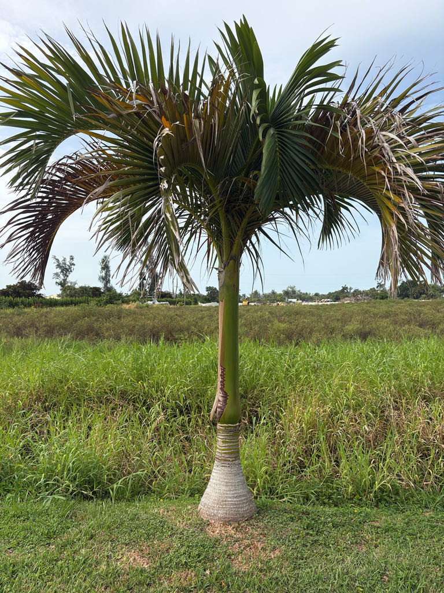

- For more than a century, this palm was known to science only from descriptions and illustrations of its fruit. The original 1875 specimens had been misfiled at London's Natural History Museum under the wrong genus. Then, in 1987, living trees were found on Espiritu Santo in Vanuatu, bringing a species long thought possibly extinct back into cultivation.
- A population survey counted just 32 mature trees growing naturally across three southern Vanuatu islands. The Vanuatu Palm is Critically Endangered, and the specimen in front of you is part of the conservation story: living collections outside Vanuatu provide an important backup population for the species.
- The green, unripe fruit holds soft, jellylike flesh traditionally eaten in Vanuatu — its texture and flavor have been compared to green coconut. As the fruit ripens to vivid orange-red, that flesh gives way to a thick woody shell. When fruit is present, the slightly off-center dimple near the fruit's tip marks where the flower's stigma once sat — a detail that identifies this genus at a glance.
- This entire genus contains just one species. Carpoxylon macrospermum is the sole member of its own genus and its own subtribe, Carpoxylinae — an entire branch of the palm family represented by a single Critically Endangered species.
Carpoxylon macrospermum is endemic to lowland rainforests in the three southernmost islands of the Vanuatu archipelago — Tanna, Futuna, and Aneityum — in the South Pacific roughly 1,000 miles east of Australia. It grows in riverine and coastal forests on moist, well-drained slopes, typically below 300 meters elevation.
Natural wild stands are extremely rare; the palm is more often encountered planted near villages, and cultivated trees have been introduced to many other islands of Vanuatu.
The species was formally described in 1875 by botanists Wendland and Drude from fruit specimens collected on the island of Aneityum, but the locality was recorded only vaguely as 'New Hebrides' (the colonial name for Vanuatu), and the original herbarium material was subsequently misfiled at the Natural History Museum in London under the genus Veitchia.
For over a century the palm was known to science only through those fruit illustrations, and it was widely thought to be possibly extinct.
In 1987, Australian palm biologist John L. Dowe encountered living cultivated trees on Espiritu Santo — where the palm had long been grown near villages — allowing the misfiled original specimens to be located and correctly identified for the first time.
Seeds were distributed to botanical institutions in the years that followed, and the palm entered cultivation in tropical and subtropical collections worldwide, including Florida.
- Carpoxylon macrospermum is the sole species in its genus — a monotypic genus found nowhere else on Earth. It belongs to its own subtribe, Carpoxylinae, and its evolutionary relationships within the palm family were difficult to resolve until living material became available after the 1987 rediscovery. An entire branch of the palm family is represented by this one species.
- The IUCN lists the species as Critically Endangered. A peer-reviewed population survey counted just 32 mature individuals in the wild, distributed across three southern Vanuatu islands — Aneityum, Futuna, and Tanna.
- Deforestation for agriculture is the primary driver of habitat loss, and the possible decline of whatever animals once dispersed its large seeds adds another layer of uncertainty to the species' recovery.
- The species name macrospermum means 'large-seeded' — from the Greek macros (large) and sperma (seed) — a direct reference to the unusually large seed enclosed inside the fruit's thick woody shell. It is one of the most botanically apt names in the palm family.
- Like all native palms in Vanuatu, the species is protected by national law, and the Vanuatu Environment Unit has classified it as a high conservation priority.
- Because it grows relatively fast once established and adapts well to cultivation, Carpoxylon has been identified as a strong candidate for ex situ conservation — meaning living collections outside Vanuatu, including botanical garden specimens like this one, provide an important backup population for a species whose remaining wild stands are very small and geographically restricted.
In Vanuatu, the large, vivid fruits are eaten by animals including flying foxes (Pteropus anetianus) and coconut crabs (Birgus latro). These animals consume the fleshy outer portion of the fruit, but exactly how the large seeds are dispersed remains unresolved — a particularly interesting problem for a palm whose remaining wild populations are so small.
In Florida cultivation, the palm has no co-evolutionary history with local fauna and does not function as a documented larval host for native butterflies or moths. Inflorescences emerging below the crownshaft can attract generalist pollinating insects, but no Florida-specific dispersal or wildlife interaction has been documented.
Propagation is by seed only. The palm is monoecious — male and female flowers occur on the same tree, arranged in triads (one female flower flanked by two male flowers) on branched inflorescences that emerge below the crownshaft.
Seeds are large and germination can take two to eight months under warm, humid conditions; seeds have a relatively short viability window, which has historically limited availability in the nursery trade.
Inflorescences are twice-branched and emerge below the glossy green crownshaft. Flowers are unisexual, with female flowers positioned at the base of each floral triad and male flowers flanking them; toward the tips of the flower branches, only male flowers are present.
Obovoid fruits roughly 7 cm long by 4 cm in diameter ripen from green to a vivid orange-red. The outer flesh is fibrous; inside is a thick, woody endocarp enclosing a single large seed. The slightly off-center scar near the fruit's tip is a diagnostic feature of Carpoxylon, distinguishing it from the closely related Veitchia, whose scar is centrally positioned.
Pinnate (feather) fronds up to 4 meters long, strongly and elegantly recurved toward the tip. The leaflets (pinnae) are stiffly erect, dark green above and gray-green beneath, arranged in closely spaced opposing pairs along the rachis and held at an upward angle that gives the whole frond a pronounced V-shape in cross section.
Young seedlings produce simple, undivided bifid leaves before transitioning to the adult pinnate form.
The trunk is solitary, smooth, and light gray to whitish, with prominent ring-like leaf scars spaced along its length. The base flares distinctly in a bottle-like expansion — up to 50 cm wide — before tapering to a uniform diameter of roughly 25 to 30 cm for most of the trunk's height.
Crowning the trunk is a prominent, elongated, glossy green crownshaft roughly 1.5 meters long, formed by the tightly sheathing leaf bases.
Start at the base: the trunk swells into a broad, bottle-shaped foot before narrowing into a smooth, ring-scarred column — a silhouette unlike most of the palms in this garden. Follow the trunk up to the glossy green crownshaft, which stands out as a distinct smooth cylinder between the trunk and the eruption of arching fronds above.
The fronds themselves are worth examining closely: the leaflets angle sharply upward, giving each frond a pronounced V-shape in cross section. Look for inflorescences or old fruit stalks emerging below the crownshaft.
If fruit is present, note how large and smooth each one is — roughly 7 cm long — and the slightly off-center dimple near the tip that marks where the flower's stigma once sat, a detail that identifies this genus at a glance.
Only the unripe, green fruit is edible — local inhabitants in Vanuatu eat the soft, jellylike flesh inside the split green fruit, which has been compared in texture and flavor to green coconut.
The ripe fruit is a different matter: the endocarp hardens to a dense, woody shell around the seed, making it unsuitable to eat. No toxicity has been documented for people or dogs, but the ripe fruit offers nothing worth tasting and the hard shell is a choking concern. Otherwise, the plant is unarmed and harmless to handle.
Specimens of this palm growing in botanical collections outside Vanuatu — including this one — represent genuine conservation value. Wild populations are so small and geographically restricted that ex situ collections in botanical gardens have been specifically identified as important to the species' long-term survival.

- © Randall Carter (CC-BY-NC), via iNaturalist